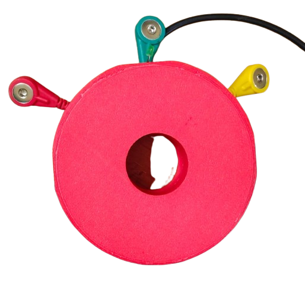
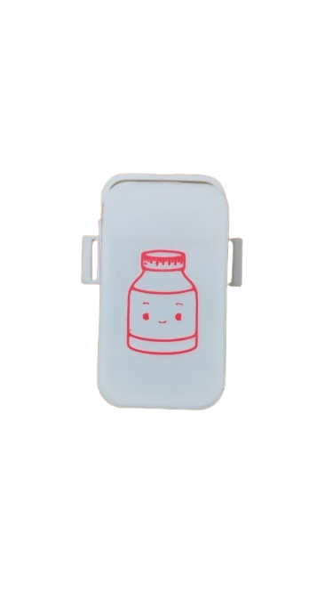
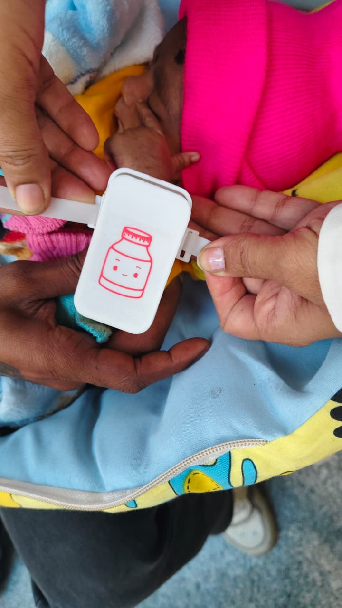
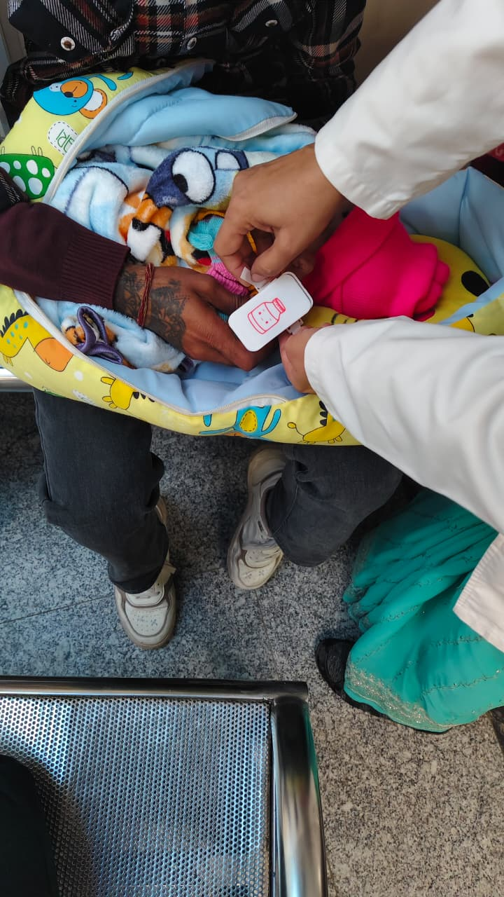
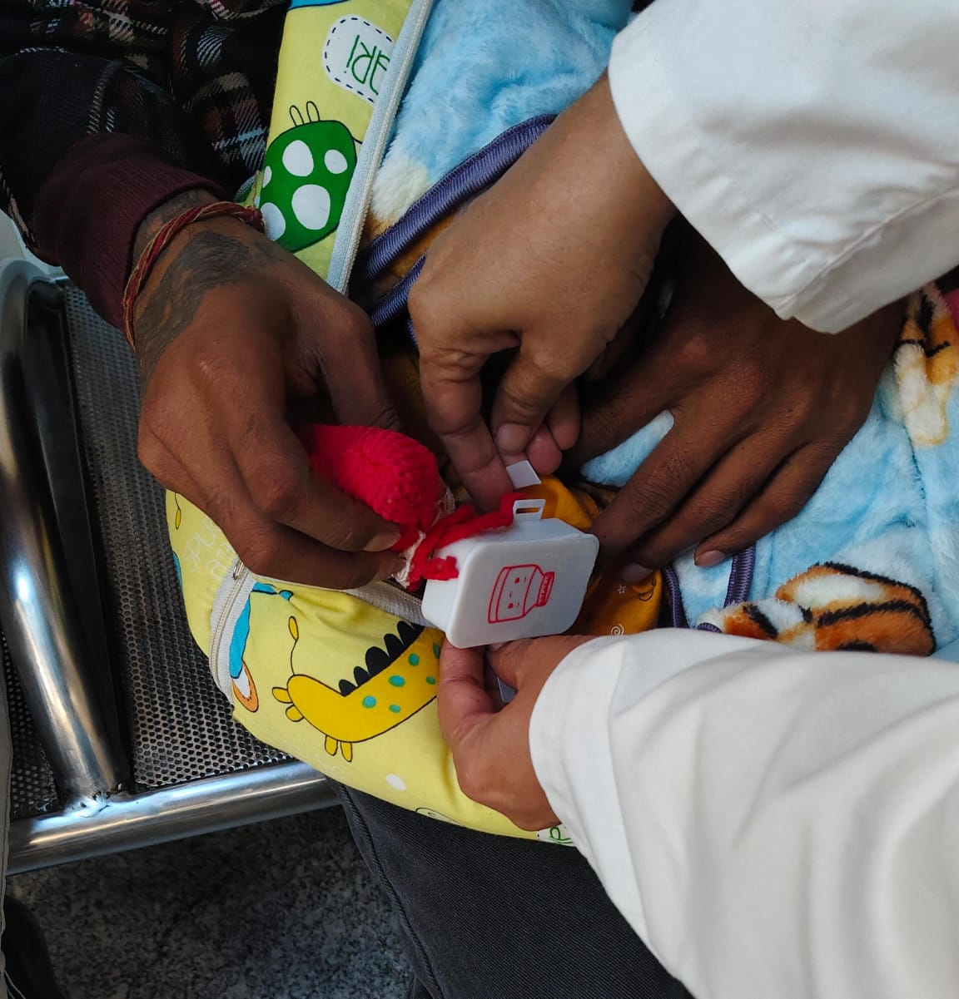

0
Births every year in India
Nearly 26 million new lives begin annually — each one a window where early awareness matters most.
AI-enabled maternal and neonatal monitoring systems designed to bridge the gap between routine observations and early intervention so warning signs are seen while they can still be acted upon.

Smart Belly Band
Neonatal PatchMaternal and neonatal complications often become severe because warning signs emerge between routine observations — and remain unnoticed until intervention becomes difficult.
Nearly 26 million new lives begin annually — each one a window where early awareness matters most.
Maternal and neonatal complications remain among the largest unsolved challenges in global health.
Early detection remains one of the single largest gaps in care delivery worldwide.
Not a device. An early-risk intelligence platform spanning sensing, signal, and insight.
Maternal monitoring
Newborn monitoring
Clinical & parent software
A deliberate path — built, tested in a real hospital, and shaped by clinical feedback.
Defining the early-risk problem and the intelligence-first approach.
Translating concept into functional, wearable hardware.
Operational MaaKosh prototypes producing real physiological signals.
Observational validation inside a real clinical environment.
Refining comfort, wearability, and workflow fit from frontline input.
Scaling toward structured, real-world pilot deployments.
Aligning toward standards and approvals for wider deployment.
Moving beyond episodic healthcare observations toward an unbroken view of maternal and neonatal wellbeing.
Transforming raw physiological signals into clear, actionable awareness — before a situation escalates.
Bridging individual monitoring and population-level health intelligence for systemic, lasting change.
Dr. Ram Manohar Lohia Hospital (RML), Delhi
MaaKosh prototypes have undergone supervised testing and observational validation in real clinical environments — helping evaluate wearability, comfort, feasibility, and workflow integration alongside practising clinicians.



Supervised observational testing · Dr. Ram Manohar Lohia Hospital, Delhi
Beyond the device, we build systems that turn health signals into population-scale decision support.
Founder & Technologist
Focused on AI, embedded systems, healthcare innovation, and public health intelligence — building indigenous technology designed for real-world deployment.
Strategic Advisor
Former leadership experience across the Aditya Birla ecosystem and Tata International — guiding strategy, partnerships, and scale.
For pilots, partnerships, incubation, grants, and healthcare collaborations.
vatsalya@nextgenrl.com